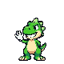
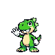
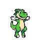
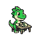
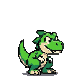
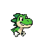
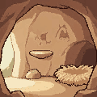
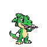
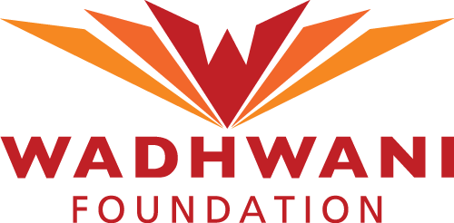
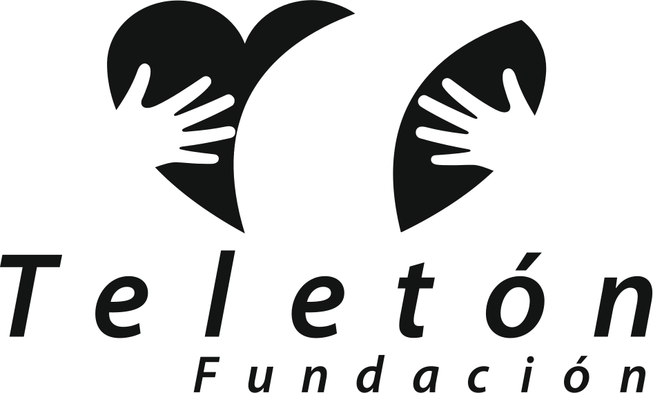

Compañeros de pixel que hacen la rutina junto con tu hijo
PixelPals crea mascotas digitales para niñas y niños de 5 a 14 años con autismo, TDAH, discapacidad intelectual y otras condiciones del neurodesarrollo. Rex, el primero, convierte lavarse los dientes, comer y dormir en algo que se hace en equipo.
Ganamos el Ideathon Teletón 2026, pasamos a la siguiente ronda de Startup Now! del Tec de Monterrey y estamos en la incubación de Wadhwani Foundation.



“Bracitos cortos, corazón grande.”Lo que dice Rex cuando algo le cuesta trabajo
Dónde acompaña Rex
Rex acompaña al niño en casa y le cuenta a su terapeuta cómo le fue en la semana.

Rex tiene hambre, y tu hijo también
Cuando llega la hora, Rex avisa con dibujo, voz, vibración y luz. Cada rutina se parte en pasos de uno en uno. Rex los hace al mismo tiempo que el niño.
- Para niñas y niños de 5 a 14 años con autismo, TDAH, síndrome de Down, discapacidad intelectual o parálisis cerebral
- Cepillarse, desayunar, bañarse, dormir y tomar medicina
- Cuatro perfiles: normal, alto contraste, bajo estímulo para quien se abruma con luces y sonidos, y un solo botón para quien tiene poca movilidad en las manos
- Si hoy no se pudo, Rex vuelve a invitar mañana
El resumen del día para quien cuida
Mamá, papá o quien cuida arma las rutinas desde un panel sencillo. Al final del día ve qué se hizo, dónde hubo pausas y cuándo Rex pidió ayuda a un adulto.
Ese mismo resumen puede llegar a la terapeuta, para que la próxima sesión empiece con datos de la casa.

Rex es el primero de la familia
Las rutinas no dependen del personaje. Cada pal es un paquete de dibujos, sonidos y voz encima del mismo motor, así que el siguiente compañero puede ser un triceratops o una pterodáctila.
1 de 14
personas en México vive con alguna discapacidad.
INEGI, ENADID 2023. Son 8.8 millones de personas de 5 años o más.niñas, niños y adolescentes atendió el sistema CRIT Teletón en un año, y casi la mitad llegó por una lesión cerebral.
botones en Rex: Ayuda, Sí y Después. No hay menús ni texto que leer.
rutinas listas en el prototipo: cepillarse, desayunar, bañarse, dormir y tomar medicina.
Tres botones, cada uno con un solo significado
Rex le pregunta al niño si quiere hacer la rutina con él. Pruébalo aquí con la de lavarse los dientes.
AyudaRex escucha y, si hace falta, le avisa a un adulto.
SíPasa al siguiente paso. Cuando termina la rutina, Rex le da una estrella.
DespuésRex espera y vuelve a preguntar en un ratito.
Con el panel para cuidadores, los reportes del día y las cinco rutinas.

¡Rawr! Mis dientes quieren brillar. ¿Nos lavamos juntos?
REX
Con teclado: flecha izquierda para Ayuda, barra espaciadora para Sí, flecha derecha para Después
Nació de algo que los papás repiten todos los días
“Ve a lavarte los dientes.” Muchas familias de niños con discapacidad repiten esa frase varias veces al día, y las rutinas terminan cansando a todos.
En septiembre de 2026, cinco estudiantes del Tec de Monterrey tuvimos dos días en el Ideathon Teletón para pensar en eso. Ahí hicimos a Rex, una especie de tamagotchi en el que el niño cuida a Rex haciendo sus propias rutinas con él.
Hoy el prototipo corre en el navegador y el dispositivo de bolsillo está en diseño. Ya lo revisaron expertos en Startup Now! del Tec, y ahora buscamos familias con hijas o hijos de 5 a 14 años que quieran probarlo con nosotros antes de que llegue a más casas. Rex apoya las rutinas de casa y no sustituye la terapia ni es un dispositivo médico.


De septiembre a noviembre de 2026
Primer lugar en el Ideathon Teletón
Ganamos entre 11 equipos en la Ciudad de México, con un prototipo hecho en 2 días.
Incubación con Wadhwani Foundation
Entramos al programa Ignite para pasar de la idea a un plan de negocio.
Pasamos a la siguiente ronda de Startup Now! del Tec de Monterrey
Varios expertos probaron Rex y nos dieron retroalimentación.
Quiénes nos apoyan
Nos impulsan

Nos premiaron en el Ideathon Teletón 2026

Queremos probar Rex con más familias
Si tienes una hija o un hijo de 5 a 14 años, eres terapeuta, trabajas en una escuela o quieres invertir en PixelPals, nos encantaría platicar contigo.
O llámanos al +52 55 1003 1611